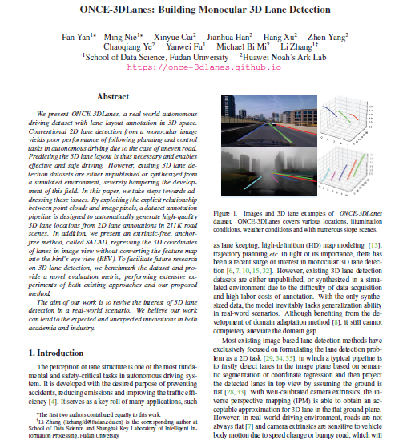

|
Fudan University Huawei Noah’s Ark Lab
|
We present ONCE-3DLanes, a real-world autonomous driving dataset with lane layout annotation in 3D space. Conventional 2D lane detection from a monocular image yields poor performance of following planning and control tasks in autonomous driving due to the case of uneven road.
Predicting the 3D lane layout is thus necessary and enables effective and safe driving. However, existing 3D lane detection datasets are either unpublished or synthesized from a simulated environment, severely hampering the development of this field. In this paper, we take steps towards addressing these issues. By exploiting the explicit relationship between point clouds and image pixels, a dataset annotation pipeline is designed to automatically generate high-quality 3D lane locations from 2D lane annotations in 211K road scenes.
In addition, we present an extrinsic-free, anchor-free method, called SALAD, regressing the 3D coordinates of lanes in image view without converting the feature map into the bird's-eye view (BEV).
To facilitate future research on 3D lane detection, we benchmark the dataset and provide a novel evaluation metric, performing extensive experiments of both existing approaches and our proposed method.
The aim of our work is to revive the interest of 3D lane detection in a real-world scenario. We believe our work can lead to the expected and unexpected innovations in both academia and industry.
|
Dataset Annotation Pipeline.
|
|
Spatial-Aware monocular LAne Detection.
|
|  |
ONCE-3DLanes: Building Monocular 3D Lane Detection
Fan Yan, Ming Nie, Xinyue Cai, Hang Xu, Zhen Yang, Chaoqiang Ye, Yanwei Fu, Michael Bi Mi, Li Zhang [Paper] [Code + Data] [Bibtex] |